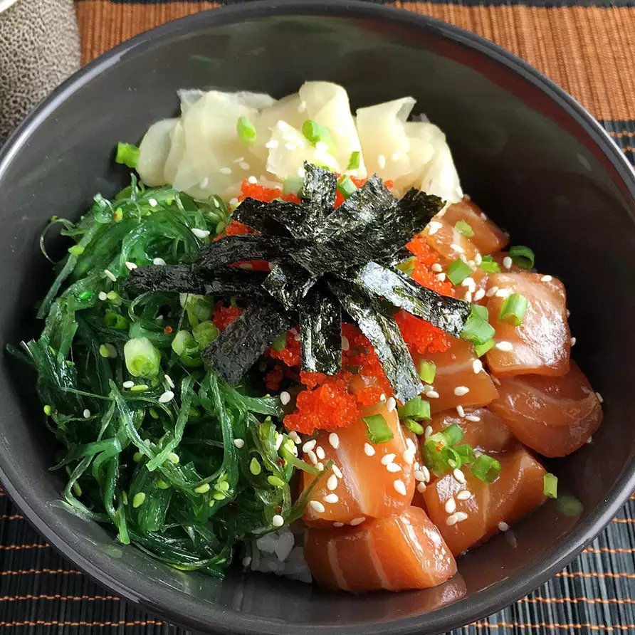

Do-It-Yourself Salmon Poke Bowls

Description
Salmon poke bowls are easy to make in your own home! Buy your favorite toppings and enjoy a totally custom poke bowl for cheaper than buying it at a restaurant.
Ingredients
- 4 cups cooked rice
- 4 tablespoons soy sauce
- 4 teaspoons rice vinegar
- 4 teaspoons sesame oil
- 1/4 teaspoon chile oil (Optional)
- 3/4 point sashimi-grade salmon
Toppings
- 1 avocado, sliced, or to taste
- 1 red bell pepper, sliced, or more to taste
- 1/4 cup shelled edamame, or more to taste
- 4 sheets dried seaweed, cut into strips, or to taste
- 1 tablespoon pickled ginger, or to taste
- 1 tablespoon furikake (Japanese nori seasoning), or to taste
- 2 tablespoons chopped green onion, or to taste
- 1 tablespoon sesame seeds, or to taste
Directions
- Divide rice among 4 bowls.
- Mix soy sauce, rice vinegar, sesame oil, and chile oil in a bowl to make dressing. Mix salmon with the dressing. Divide among the 4 bowls.
- Top bowls with avocado, red bell pepper, edamame, seaweed, pickled ginger, and furikake seasoning. Garnish with chopped green onion a sprinkling of sesame seeds.
Cook's Notes
Substitute lettuce for the rice or use a mixture of both. Substitute sashimi-grade tuna for the salmon, or use tofu or mushrooms. Add finely chopped pollock if desired.
Use tamari or liquid aminos if the dressing needs to be gluten free.
Here are some other topping ideas: wakame (seaweed salad), fresh tobiko (fish eggs), thinly sliced omelet, diced pineapple and/or mango.
Return Home